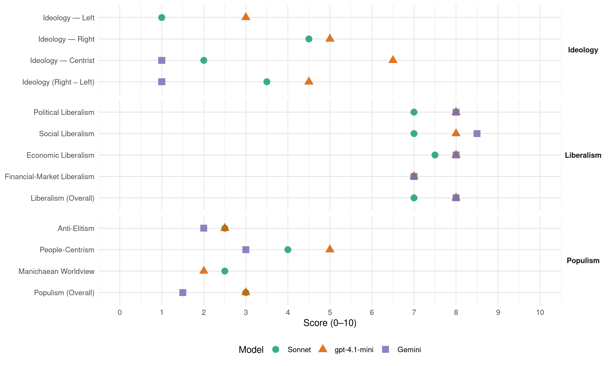

Conservatives (United Kingdom, 2015)
manifesto_id 51620_201505
Get full text: This site shows derived annotations and short verbatim quotes only. The full manifesto text is © Manifesto Project / WZB — obtain it via manifesto-project.wzb.eu using the manifesto_id above.
Headline scores
| Dimension | Sonnet | gpt-4.1-mini | Gemini |
|---|---|---|---|
| Populism (Overall) | 3.0 | 3.0 | 1.5 |
| Anti-Elitism | 2.5 | 2.5 | 2.0 |
| People-Centrism | 4.0 | 5.0 | 3.0 |
| Manichaean Worldview | 2.5 | 2.0 | – |
| Ideology (Right − Left) | 3.5 | 4.5 | 1.0 |
| Liberalism (Overall) | 7.0 | 8.0 | 8.0 |
| Political Liberalism | 7.0 | 8.0 | 8.0 |
| Social Liberalism | 7.0 | 8.0 | 8.5 |
| Economic Liberalism | 7.5 | 8.0 | 8.0 |
| Financial-Market Liberalism | 7.0 | 7.0 | 7.0 |
Evidence per dimension
Economic Liberalism
Gemini · score 8.0 · verified · chunk 1
“most competitive business tax regime”
we want to maintain the most competitive business tax regime in the G20
Gemini · score 8.0 · verified · chunk 2
“promote competition in the energy market”
We will: keep your bills as low as possible and promote competition in the energy market ensure your homes and businesses have energy supplies
gpt-4.1-mini · score 9.0 · verified · chunk 1
“cut Income Tax for 30 million people”
We will: cut income tax for 30 million people, taking everyone who earns less than £12,500 out of Income Tax altogether pass a new law so that nobody working 30 hours on the Minimum Wage pays Income Tax on what they earn back aspiration by raising the 40p tax threshold – so that no one earning less than £50,000 pays it cap overall welfare spending, lower the amount of benefits that any household can receive to £23,000 and continue to roll out Universal Credit, to make work pay bring in tax-free childcare to support parents back into work, and give working parents of 3 and 4-year-olds 30 hours of free childcare a week.
gpt-4.1-mini · score 7.0 · verified · chunk 2
“We have introduced Help to Buy, making it much easier for people to secure a mortgage”
Under Labour, house-building fell to its lowest peacetime level since the 1920s. Developers were building too few homes and the aftermath of the banking crisis saw young people struggling to raise a deposit . House building at its highest since 2007 These past five years have been about reversing this trend. We have unblocked the planning system, to help builders start building again. We have introduced Help to Buy, making it much easier for people to secure a mortgage.
Sonnet · score 8.0 · verified · chunk 1
“cut red tape, boost start-ups”
We will cut red tape, boost start-ups and small businesses…We will cut a further £10 billion of red tape over the next Parliament
Sonnet · score 7.0 · verified · chunk 2
“promoting free trade, and pushing to extend the Single Market”
exempting smallest businesses from red tape, promoting free trade, and pushing to extend the Single Market to new sectors, like digital.
Financial-Market Liberalism
Gemini · score 7.0 · verified · chunk 1
“inject fresh competition into the market”
help new and existing challenger banks to inject fresh competition into the market for personal current accounts
Gemini · score 7.0 · verified · chunk 2
“safeguarding Britain as a global centre of excellence in finance”
target unscrupulous behaviour in the financial services industry, while safeguarding Britain as a global centre of excellence in finance. So we will resist EU attempts
gpt-4.1-mini · score 7.0 · verified · chunk 1
“best regulated in the world with our new system of supervision”
We will continue to build a stronger, safer and more secure banking system that serves its customers and provides businesses with the finance they need to grow and create jobs We will make sure our financial services industry is the best regulated in the world with our new system of supervision led by the independent Bank of England.
gpt-4.1-mini · score 7.0 · verified · chunk 2
“We have demanded that energy companies simplify their tariffs”
We have delivered a better deal for consumers too. We have demanded that energy companies simplify their tariffs; encouraged more independent suppliers – which now account for ten per cent of the household market; and made it much easier for people to switch energy providers.
Sonnet · score 7.0 · verified · chunk 1
“financial services industry is the best regulated”
We will make sure our financial services industry is the best regulated in the world with our new system of supervision led by the independent Bank of England
Sonnet · score 7.0 · verified · chunk 2
“new rules target unscrupulous behaviour in the financial services”
We want to ensure that new rules target unscrupulous behaviour in the financial services industry, while safeguarding Britain as a global centre of excellence in finance.
Political Liberalism
Gemini · score 8.0 · verified · chunk 1
“independent Office for Budget Responsibility”
And by establishing the independent Office for Budget Responsibility (OBR), we have ended
Gemini · score 8.0 · verified · chunk 2
“work of the free press is so important”
libel laws. Because the work of the free press is so important we will offer explicit protection for the role of journalists
gpt-4.1-mini · score 8.0 · verified · chunk 1
“free media is the bedrock of an open society”
A free media is the bedrock of an open society. We will deliver a comprehensive review of the BBC Royal Charter, ensuring it delivers value for money for the licence fee payer, while maintaining a world class service and supporting our creative industries.
gpt-4.1-mini · score 8.0 · verified · chunk 2
“We will scrap the Human Rights Act and introduce a British Bill of Rights”
We will scrap the Human Rights Act and introduce a British Bill of Rights which will restore common sense to the application of human rights in the UK. The Bill will remain faithful to the basic principles of human rights, which we signed up to in the original European Convention on Human Rights. It will protect basic rights, like the right to a fair trial, and the right to life, which are an essential part of a modern democratic society.
Sonnet · score 7.0 · verified · chunk 1
“independent Office for Budget Responsibility”
by establishing the independent Office for Budget Responsibility (OBR), we have ended – permanently – the ability of politicians to cook the books
Sonnet · score 7.0 · verified · chunk 2
“make votes of more equal value through long overdue boundary reforms”
We will also continue to reform our political system: make votes of more equal value through long overdue boundary reforms, reducing the number of MPs
Liberalism (Overall)
Gemini · score 8.0 · verified · chunk 1
“most competitive business tax regime”
we want to maintain the most competitive business tax regime in the G20
Gemini · score 8.0 · verified · chunk 2
“work of the free press is so important”
libel laws. Because the work of the free press is so important we will offer explicit protection for the role of journalists
gpt-4.1-mini · score 8.0 · verified · chunk 1
“cut Income Tax for 30 million people”
We will: cut income tax for 30 million people, taking everyone who earns less than £12,500 out of Income Tax altogether pass a new law so that nobody working 30 hours on the Minimum Wage pays Income Tax on what they earn back aspiration by raising the 40p tax threshold – so that no one earning less than £50,000 pays it cap overall welfare spending, lower the amount of benefits that any household can receive to £23,000 and continue to roll out Universal Credit, to make work pay bring in tax-free childcare to support parents back into work, and give working parents of 3 and 4-year-olds 30 hours of free childcare a week.
gpt-4.1-mini · score 8.0 · verified · chunk 2
“We will scrap the Human Rights Act and introduce a British Bill of Rights”
We will scrap the Human Rights Act and introduce a British Bill of Rights which will restore common sense to the application of human rights in the UK. The Bill will remain faithful to the basic principles of human rights, which we signed up to in the original European Convention on Human Rights. It will protect basic rights, like the right to a fair trial, and the right to life, which are an essential part of a modern democratic society.
Sonnet · score 7.0 · verified · chunk 1
“most competitive business tax regime”
we want to maintain the most competitive business tax regime in the G20, and oppose Labour’s plans to increase Corporation Tax
Sonnet · score 7.0 · verified · chunk 2
“promoting free trade, and pushing to extend the Single Market”
exempting smallest businesses from red tape, promoting free trade, and pushing to extend the Single Market to new sectors, like digital.
Anti-Elitism
Gemini · score 1.0 · verified · chunk 1
“cook the books for political gain”
ended – permanently – the ability of politicians to cook the books for political gain at the nation’s expense.
Gemini · score 3.0 · verified · chunk 2
“Quangos grew in number, wasteful projects proliferated”
Government is the servant of the British people, not their master. That simple fact was forgotten when Labour was in power. Quangos grew in number, wasteful projects proliferated and the bureaucracy swelled
gpt-4.1-mini · score 3.0 · verified · chunk 1
“everyone has made sacrifices and everyone has played their part”
It is a profound Conservative belief that our country is made great not through the action of government alone, but through the flair, the ingenuity and hard work of the British people – and so it has proved the last five years. We can be proud of what we have achieved so far together, and especially proud that as we have taken hard decisions on public spending, we have protected the National Health Service, with 9,500 more doctors and 6,900 more nurses, and ensured generous rises in the State Pension.
gpt-4.1-mini · score 2.0 · verified · chunk 2
“Labour didn’t trust our brilliant policemen and women”
Labour didn’t trust our brilliant policemen and women, probation staff and prison officers to do their job, but tried to micromanage every police force from Whitehall, doing serious damage to officer morale, police discretion and forces’ performance.
Sonnet · score 2.0 · verified · chunk 1
“Labour lost all control of spending”
the year 2000, the year before Labour lost all control of spending and the national debt started its longest rise for hundreds of years
Sonnet · score 3.0 · verified · chunk 2
“Government is the servant of the British people, not their master”
That simple fact was forgotten when Labour was in power. Quangos grew in number, wasteful projects proliferated and the bureaucracy swelled
Ideology — Centrist
Gemini · score 1.0 · verified · chunk 1
“cook the books for political gain”
ended – permanently – the ability of politicians to cook the books for political gain at the nation’s expense.
gpt-4.1-mini · score 7.0 · verified · chunk 1
“everyone has made sacrifices and everyone has played their part”
It is a profound Conservative belief that our country is made great not through the action of government alone, but through the flair, the ingenuity and hard work of the British people – and so it has proved the last five years. We can be proud of what we have achieved so far together, and especially proud that as we have taken hard decisions on public spending, we have protected the National Health Service, with 9,500 more doctors and 6,900 more nurses, and ensured generous rises in the State Pension.
gpt-4.1-mini · score 6.0 · verified · chunk 2
“The government is the servant of the British people”
The government is the servant of the British people. Every pound spent must be scrutinised, and government run as efficiently and effectively as possible. We will: save you money by cutting government waste put more of the essential services you use online, to make them more convenient continue to make government more transparent, so you can hold us to account for how your money is being spent.
Sonnet · score 2.0 · verified · chunk 1
“a plan for every stage of your life”
We have a plan for every stage of your life: FOR THE BEST START IN LIFE we will continue to increase spending on the NHS
Sonnet · score 2.0 · verified · chunk 2
“power to the people”
All this reflects a core Conservative belief: power to the people. Around Britain you can see that principle in practice.
Ideology — Left
gpt-4.1-mini · score 3.0 · verified · chunk 1
“inequality has fallen, and child and pensioner poverty are down”
Those with the broadest shoulders have contributed the most to deficit reduction – which is why inequality has fallen, and child and pensioner poverty are down – and they will continue to do so.
gpt-4.1-mini · score 3.0 · verified · chunk 2
“We have introduced tougher regulation of gambling”
We have always believed that churches, faith groups and other voluntary groups play an important and longstanding role in this country’s social fabric, running foodbanks, helping the homeless, and tackling debt and addictions, such as alcoholism and gambling. We have already introduced tougher regulation of gambling, with enhanced player protections and planning controls to prevent the further proliferation of high street betting shops; we’ve capped payday lending and backed financial inclusion; and will continue to support action that helps vulnerable people get the assistance they need.
Sonnet · score 1.0 · verified · chunk 1
“inequality has fallen”
Those with the broadest shoulders have contributed the most to deficit reduction – which is why inequality has fallen, and child and pensioner poverty are down
Sonnet · score 1.0 · verified · chunk 2
“lift the number of women on national sports governing bodies”
We will lift the number of women on national sports governing bodies to at least 25 per cent by 2017
Ideology (Right − Left)
Gemini · score 1.0 · verified · chunk 1
“cook the books for political gain”
ended – permanently – the ability of politicians to cook the books for political gain at the nation’s expense.
gpt-4.1-mini · score 5.0 · verified · chunk 1
“economic chaos under Labour, with higher taxes, more debt”
So you face a clear choice. Economic competence, with David Cameron as Prime Minister, following through on our long-term economic plan. Or economic chaos under Labour, with higher taxes, more debt and no plan to fix our public finances, create jobs or build a more secure economy.
gpt-4.1-mini · score 4.0 · verified · chunk 2
“Labour didn’t trust our brilliant policemen and women”
Labour didn’t trust our brilliant policemen and women, probation staff and prison officers to do their job, but tried to micromanage every police force from Whitehall, doing serious damage to officer morale, police discretion and forces’ performance.
Sonnet · score 3.0 · verified · chunk 1
“controlled immigration, not mass immigration”
Conservatives believe in controlled immigration, not mass immigration. Immigration brings real benefits to Britain
Sonnet · score 4.0 · verified · chunk 2
“scale of migration triggered by new members joining”
It interferes too much in our daily lives, and the scale of migration triggered by new members joining in recent years has had a real impact on local communities.
Ideology — Right
gpt-4.1-mini · score 6.0 · verified · chunk 1
“controlled immigration that benefits Britain”
Controlled immigration that benefits Britain……………………………………………………………………………………………………………………………………………………………………….. 29 Controlled immigration that benefits Britain. Immigration brings real benefits to Britain – to our economy, our culture and our national life. We will always be a party that is open, outward-looking and welcoming to people from all around the world. We also know that immigration must be controlled.
gpt-4.1-mini · score 4.0 · verified · chunk 2
“We will halt the spread of subsidised onshore wind farms”
We will halt the spread of subsidised onshore wind farms meet our climate change commitments, cutting carbon emissions as cheaply as possible, to save you money Without secure energy supplies, we leave British families and business at the mercy of fluctuating global oil and gas prices; we increase our dependence on foreign sources of energy; and we become less safe and less prosperous as a result.
Sonnet · score 4.0 · verified · chunk 1
“controlled immigration, not mass immigration”
Conservatives believe in controlled immigration, not mass immigration. Immigration brings real benefits to Britain
Sonnet · score 5.0 · verified · chunk 2
“scale of migration triggered by new members joining”
It interferes too much in our daily lives, and the scale of migration triggered by new members joining in recent years has had a real impact on local communities.
Manichaean Worldview
gpt-4.1-mini · score 2.0 · verified · chunk 1
“economic chaos under Labour, with higher taxes, more debt”
So you face a clear choice. Economic competence, with David Cameron as Prime Minister, following through on our long-term economic plan. Or economic chaos under Labour, with higher taxes, more debt and no plan to fix our public finances, create jobs or build a more secure economy.
gpt-4.1-mini · score 2.0 · verified · chunk 2
“Labour took the opposite approach”
But Labour took the opposite approach. Power margins – the safety cushion we need to prevent blackouts – have fallen to record lows because of their historic failure to invest in new capacity. Domestic sources of oil and gas were unexploited. And Labour failed to deliver the next generation of energy projects that will help us keep the lights on, drive bills down and reduce carbon emissions.
Sonnet · score 3.0 · verified · chunk 1
“economic chaos under Labour”
Economic competence, with David Cameron as Prime Minister…Or economic chaos under Labour, with higher taxes, more debt and no plan
Sonnet · score 2.0 · verified · chunk 2
“Labour failed to give you a choice on the EU”
Only the Conservative Party will deliver real change and real choice on Europe, with an in-out referendum by the end of 2017.
People-Centrism
Gemini · score 2.0 · verified · chunk 1
“hard work of the British people”
ingenuity and hard work of the British people – and so it has proved
Gemini · score 4.0 · verified · chunk 2
“The government is the servant of the British people”
Making government work better for you Our commitment to you: The government is the servant of the British people. Every pound spent must be scrutinised
gpt-4.1-mini · score 7.0 · verified · chunk 1
“everyone has made sacrifices and everyone has played their part”
It is a profound Conservative belief that our country is made great not through the action of government alone, but through the flair, the ingenuity and hard work of the British people – and so it has proved the last five years. We can be proud of what we have achieved so far together, and especially proud that as we have taken hard decisions on public spending, we have protected the National Health Service, with 9,500 more doctors and 6,900 more nurses, and ensured generous rises in the State Pension.
gpt-4.1-mini · score 3.0 · verified · chunk 2
“The government is the servant of the British people”
The government is the servant of the British people. Every pound spent must be scrutinised, and government run as efficiently and effectively as possible. We will: save you money by cutting government waste put more of the essential services you use online, to make them more convenient continue to make government more transparent, so you can hold us to account for how your money is being spent.
Sonnet · score 4.0 · verified · chunk 1
“a plan for you”
Above all, it is a plan for you. I hope you will give it your support, so that together, we can see through the task we have begun.
Sonnet · score 4.0 · verified · chunk 2
“improving our country – and giving young people the power”
Building the Big Society is about involving the people, neighbourhoods, villages, towns and cities of Britain in the great task of
Populism (Overall)
Gemini · score 1.0 · verified · chunk 1
“cook the books for political gain”
ended – permanently – the ability of politicians to cook the books for political gain at the nation’s expense.
Gemini · score 2.0 · verified · chunk 2
“The government is the servant of the British people”
Making government work better for you Our commitment to you: The government is the servant of the British people. Every pound spent must be scrutinised
gpt-4.1-mini · score 4.0 · verified · chunk 1
“everyone has made sacrifices and everyone has played their part”
It is a profound Conservative belief that our country is made great not through the action of government alone, but through the flair, the ingenuity and hard work of the British people – and so it has proved the last five years. We can be proud of what we have achieved so far together, and especially proud that as we have taken hard decisions on public spending, we have protected the National Health Service, with 9,500 more doctors and 6,900 more nurses, and ensured generous rises in the State Pension.
gpt-4.1-mini · score 2.0 · verified · chunk 2
“Labour didn’t trust our brilliant policemen and women”
Labour didn’t trust our brilliant policemen and women, probation staff and prison officers to do their job, but tried to micromanage every police force from Whitehall, doing serious damage to officer morale, police discretion and forces’ performance.
Sonnet · score 3.0 · verified · chunk 1
“economic chaos under Labour”
Economic competence, with David Cameron as Prime Minister…Or economic chaos under Labour, with higher taxes, more debt and no plan
Sonnet · score 3.0 · verified · chunk 2
“Government is the servant of the British people”
Government is the servant of the British people, not their master. That simple fact was forgotten when Labour was in power.
Social Liberalism